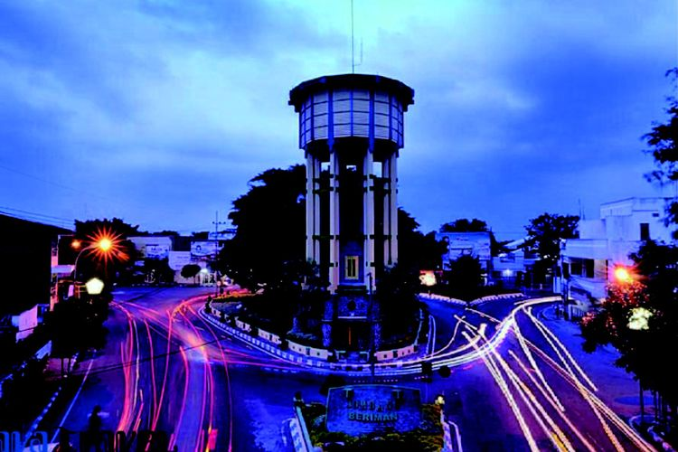
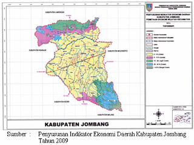
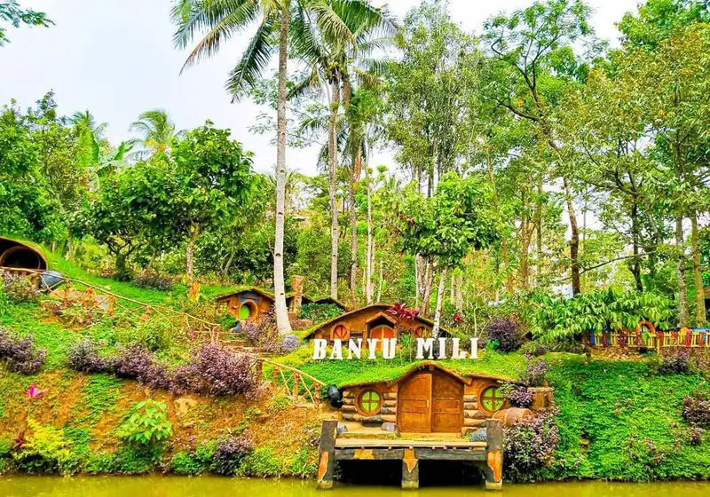

Sejarah

Jombang termasuk kabupaten muda di Jawa Timur, yang berdiri tahun 1910. Awalnya Jombang merupakan bagian dari Kabupaten Mojokerto. Lalu pada 21 Oktober 1910 mulai berdiri sendiri. Meski demikian, wilayah Kabupaten Jombang sudah dihuni manusia dan menjadi saksi banyak kerajaan di masa lalu. Salah satunya adalah Kerajaan Mataram Kuno yang dipindah pusatnya dari Jawa Tengah ke Jawa Timur oleh Mpu Sindok.
Berdasarkan penelitian yang ada, pusat pemerintahan baru Mataram Kuno berada di Watugaluh. Saat itu, Watugaluh tercatat sebagai sebuah desa di Kecamatan Diwek, Kabupaten Jombang. Dengan demikian, Jombang sudah menjadi bagian dari percaturan peradaban Jawa sejak abad ke-10 masehi.
Pada masa Majapahit, Jombang menjadi gapura sekaligus pintu masuk ke wilayah Kotaraja. Gapura barat Majapahit diperkirakan ada di Desa Tunggorono, Kecamatan Jombang sedangkan gapura selatan ada di Desa Ngrimbi, Kecamatan Bareng, Jombang. Di Jombang juga ditemukan salah satu bangunan peninggalan Majapahit yaitu Candi Arimbi di Kecamatan Bareng.Sedangkan dari segi pemerintahan, Jombang masuk Kabupaten Mojokerto yang didirikan Belanda pada tahun 1811. Wilayah Jombang kemudian berkembang menjadi salah satu residen di Kabupaten Mojokerto. Bahkan, wilayah Trowulan yang diduga menjadi pusat pemerintahan Majapahit pernah menjadi bagian dari Kawedanan Jombang.Status kabupaten di Jombang baru diperoleh pada tahun 1910, dengan Bupati Jombang pertama bernama Raden Adipati Arya Soeroadiningrat. Penetapan Kabupaten Jombang dilakukan pada 21 Oktober 1910, yang saat ini ditetapkan sebagai Hari Jadi Kabupaten Jombang.
Geografis

Kabupaten Jombang memiliki letak yang sangat strategis, karena berada pada perlintasan jalan Arteri Primer SurabayaJombang-Solo dan jalan kolektor primer Malang-Jombang-Babat. Selain itu, Kabupaten Jombang juga dilintasi jalan tol Mojokerto-Kertosono. Ibukota Kabupaten Jombang berjarak 79 km dari Surabaya, Ibukota Provinsi Jawa Timur. Kabupaten Jombang terletak antara 7°20’48,60”-7°46’41,26” Lintang Selatan serta antara 112°03’46,57”-112°27’21,26” Bujur Timur.Luas wilayah Kabupaten Jombang adalah 1.109,63 km² (110.963 Ha), atau menempati sekitar 2,5% dari luas keseluruhan wilayah Provinsi Jawa Timur. Secara administratif, Kabupaten Jombang terdiri dari 21 kecamatan, 302 desa, 4 kelurahan, serta 1.258 dusun/lingkungan.
Batas wilayah administrasi Kabupaten Jombang adalah:
- Sebelah Utara : Kabupaten Lamongan dan Kabupaten Bojonegoro
- Sebelah Timur : Kabupaten Mojokerto
- Sebelah Selatan : Kabupaten Kediri dan Kabupaten Malang
- Sebelah Barat : Kabupaten Nganjuk
Berdasarkan ciri-ciri fisik tanahnya, Kabupaten Jombang dapat dibagi menjadi 3 kawasan utama yaitu:
-
Kawasan Utara, berada di sebelah utara Sungai Brantas, merupakan bagian dari pegunungan kapur yang mempunyai fisiologi mendatar dan merupakan perbukitan struktural lipatan, meliputi Kecamatan Plandaan, Kabuh, Ploso, Kudu, dan Ngusikan.
- Kawasan Tengah, berada di sebelah selatan Sungai Brantas, sebagian besar merupakan tanah pertanian yang cocok untuk tanaman padi dan palawija karena memiliki sistem irigasi yang cukup bagus, meliputi Kecamatan Bandarkedungmulyo, Perak, Gudo, Diwek, Mojoagung, Sumobito, Jogoroto, Peterongan, Jombang, Megaluh, Tembelang, dan Kesamben.
- Kawasan Selatan, berada di sebelah tenggara Kabupaten Jombang, merupakan tanah pegunungan yang cocok untuk tanaman perkebunan, meliputi Kecamatan Ngoro, Bareng, Mojowarno, dan Wonosalam
- Kawasan Selatan, berada di sebelah tenggara Kabupaten Jombang, merupakan tanah pegunungan yang cocok untuk tanaman perkebunan, meliputi Kecamatan Ngoro, Bareng, Mojowarno, dan Wonosalam
wisata
Selain mempunyai banyak tokoh terkenal, Jombang juga punya tempat-tempat wisata yang menarik untuk dikunjungi. Adapun jenis-jenis tempat rekreasi yang bisa dipilih yaitu wisata alam, sejarah, dan tempat-tempat dengan pemandangan unik lainnya.
Kampoeng Djawi

Tempat wisata Kampoeng Djawi mengusung wisata bernuansa pedesaan. Memiliki konsep bangunan rumah Jawa tradisional yang unik dengan menggunakan kayu jati asli. Bahkan interior hingga dekorasinya sangat kental dengan rumah-rumah tradisional khas pulau Jawa.
Banyu Mili

Wisata Banyu Mili merupakan wisata alam sekaligus wisata buatan di Wonosalam Jombang. Selain keindahan alamnya, disana juga ada sentuhan kreatifitas pengelola berupa spot foto instagramable. Wisata Banyu Mili Wonosalam memiliki berbagai spot foto seperti Rumah Hobbit, Spot Gardu Pandang. Rumah Hobbit di Wisata Banyu Mili menjadi spot paling favorit para wisatawan. Nah bagi Anda yang mencari tempat hunting spot foto di Jombang bisa kunjungi tempat wisata ini.
Candi Ngrimbi

Candi Ngrimbi merupakan situs sejarah peninggalan kerajaan Majapahit. Pemandangan sekitar candi tampak menarik karena banyak tumbuh rerumputan hijau. Selain itu, kamu juga bisa menyaksikan Gunung Anjasmoro yang menjulang gagah.